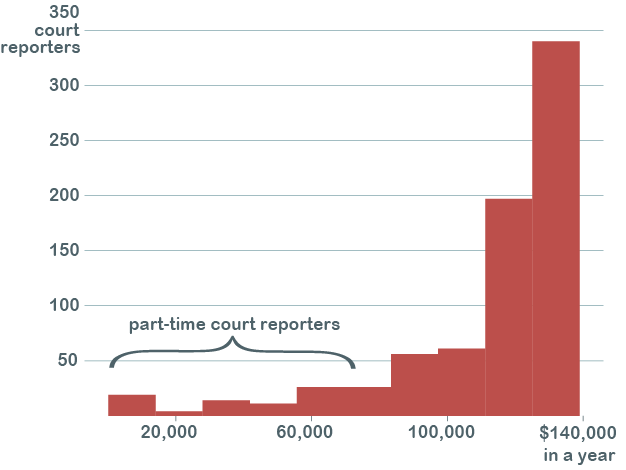

Court Reporters
By Paivi Ala-Risku
Published July 31, 2018
(PLEASE NOTE: the text is still work in progress)
Senior Court Reporter Laura Ludovico has decorated her small office room in New York County Supreme Court to the smallest detail. There are black and white curtains in the window and green polka-dot curtains in the door. Overall theme is turquoise, even the small refrigerator under her writing table is turquoise. In a shelfs and windowsill there are lots of small memorabilia: next to some family photos there’s a small fake skull that’s wearing a glittery tiara.
Today, Ludovico has been working here from 7.15 AM transcribing a matrimonial case she took in June.
This is what court reporters do: they sit through hearings, motions and trials in court rooms and they type in everything that’s being said. They have their little stenotype machines, with only 22 keys compared to the usual keyboard with 26 keys for letters and a bunch of more for all the numbers, punctuation and others. The steno machine doesn’t have a key for the letter Q or I for example. They write with strokes: that means that they press several keys at the same time, writing a whole word or even more with a single stroke. The text they produce is impossible to ordinary people to understand. Luckily, nowadays, there are computer programs that translates steno notes in normal English in real time. That’s how the captionings for example for live television shows are made.
Today, Ludovico will be attending to one court motions. She doesn’t know yet what it will be about. She’ll discover it when she enters the courtroom.
The job of a court reporter, to produce a verbatim record of what was said in a courtroom, is often overlooked. Yet it is a vital part of the justice system as it’s crucial to be able to check later what was really said. But these minutes don’t come without cost for the tax payers: the median salary for court reporter in New York City is $123,000.
The seemingly easy job of sitting, listening and typing, is actually quite hard to master. Many students who start studying in New York School of Court Reporting in White Plains, drop out, tells the the Director of Admission Larry Stieglitz. They just cannot learn how to type quickly and accurate enough. To graduate, which usually takes about two years, a court reporter student has to be able to type in 225 words per minute. To compare: an average person with ordinary keyboard is usually able to type about 40 words in a minute.
No wonder there might even be a shortage for court reporters.
A report, made by a consulting company Drucker Wordlwide five years ago, predicted that by 2018 there would be a shortage of 5,500 court reporters. The report, paid by the National Court Reporters Association, identified two main reason for this. First, the declining numbers of students enrolling to court reporter schools. Secondly, the average age of court reporters is quite high, around 51, and many of reporters are retiring soon.
Larry Stieglitz believes the shortage is true. He tells he get calls from court reporter agencies once or twice every month asking for graduates they could hire. But the class sizes are small, often as small as 5 students.
Eric Allen, the President of Association of Surrogates & Supreme Court Reporters, who represents all senior court reporters in the five boroughs of NYC, tells the same. If it was up to him, he would hire 30 more senior court reporters.
“We are down in numbers. I would say, ten, eleven years ago we had about 400 reporter. Today we have around 330 reporters.”
He estimates, that within next five years a further 30-35 court reporters will retire.
Six-figure salaries with two years of education
The distribution of court reporters' salaries in NYC courts.
 SOURCE: SeeThroughNY
The estimated shortage of 5,500 reporters was nationwide. No one knows whether that exact number has realized or not, but many people admit that at least in New York the shortage is true.
Manager Michael DeVito from Office of Record Production, who is responsible for statewide hiring of court reporters, tells that they are looking to hire 20-30 court reporters immediately. There are job opportunities especially in New York City and in many northern counties of New York state. The starting salary for currently advertised jobs is $79,544 in NYC, including a $4,000 location pay.
According to Eric Allen and Michael DeVito, there have been court proceedings that have been delayed because of there was not enough court reporters available,
Digital recordings could save money
Retiring court reporters, not enough students enrolling, immediate need for reporter. No wonder their high salary. It’s clear that they have good bargaining power.
That is, at least for now. The digital revolution has not left courtrooms untouched. In some states, for example in Florida, Michigan and Utah, the digital recording systems are more and more common. Massachusetts just got rid of all court reporters this June. Also in NYC, in some lower level courts, records are made by digital recording systems.
The main claims for digital reporting systems are that it could be cheaper and more reliable. American Association of Electronic Reporters and Transcribers claims in their report that to replace one court reporter with a digital reporting system could yield to a $31,000 annual savings. The calculations include both the machinery and the average salary paid to the digital recording personnel, about $50,400 in a year, which is much less than fo a court reporter.
A digital system works like this: in a courtroom there are different microphones for different speakers. The job for a digital recording person is to control the equipment and keep a log about the happenings in a courtroom which later helps with the transcriptions of the recorded material.
The advocates for digital recording say that the method is more reliable than the traditional method. When you have it on tape, you can always go back and check what was really said.
The proponents of traditional stenography argue, that the above-mentioned only applies if you really have it on tape.
“If there is a very important answer to a critical question, and a chair squeaks or an ambulance goes outside with the sirens screeching, now what do you do?” asks Eric Allen.
Nationwide, there have been court cases that needed to be remade because of failing digital recording system.
On the other hand, if there’s a traditional court reporter in courtroom and somebody sneezes or mumbles, court reporter can ask the speaker to repeat themselves.
“That happens on a daily basis,” says Allen.
“I always stress to the students that your job is to get every word that’s been said in a courtroom. You can ask someone to repeat something. Judges and lawyers understand that. They might not always be happy about it but they understand it,” says Stieglitz.
Sometimes it can be really hard to hear what people say. In the Afternoon, when Laura Ludovico is reporting a motion in the courtroom both Ludovico and the judge Jennifer G. Schecter need repeatedly interfere.
“Could you slow down,” asks Ludovico.
“”The acoustics are not so great here. Please speak slower,” says the judge minutes later.
In the 58 minutes motion hearings, the lawyer needs to be reminder eight times to speak slower and clearer.
The technology is not ready yet
Voice recognition technology has advanced rapidly in recent years, but it’s still not in a level where it could be used in courtrooms. However, there are softwares specializing in lawyers’ needs. For example, a software called Dragon is used to type in lawyer’s notes. But for the accuracy needed in courtrooms, the voice recognition technology is quite not yet there: people sneeze, they cough and speak with different accents.
The question of if or when the court reporters will be eventually replaced by voice recognizing technology remains unsolved.
“Not in my time,” says Eric Allen.
The verdict, whether a court reporter or digital system is better, is still far from clear. It can also be a matter of personal taste. For example, a blogging Federal Trial Judge Richard Kopf is a declared advocate for digital systems:
“In fact, I had far more problems with court reporters getting sick or getting tired or their steno machines failing than I have had problems with digital audio,” he writes in his blog entry titled “Lighting the fuse: It is time to get rid of court reporters in the federal courts.”
The progress of technology is hard to predict. When radio came in the first half of the 20th century, newspapers were said to vanish soon. Television was supposed to kill movie theaters. Neither of those didn’t happen.
Then again, in the age of internet both newspapers and movie theaters are suffering.
The result might lie somewhere in between. Even if there were sufficient digital recording systems, they most likely need a human to operate them. Maybe just a little less paid worker than court reporters are today.